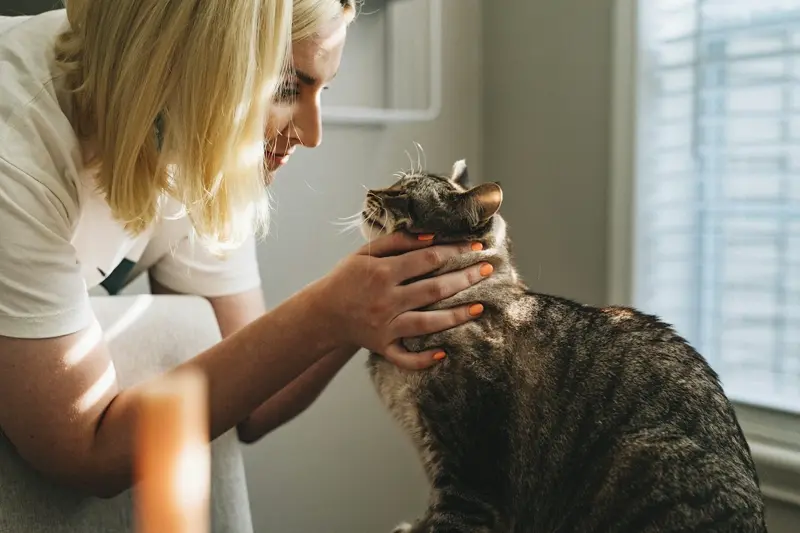

Urgência
Ligue antes de sair — orientamos o deslocamento.
Ligar agora — urgência e orientação
51 3939-8300 TOQUE PARA LIGARR. Napoleão Laureano, 431 — Centro, Canoas/RS
Ligue antes de sair — orientamos o deslocamento.
Avaliação fora do horário comercial.
Primeiros passos por telefone.
Mapa sob demanda.
